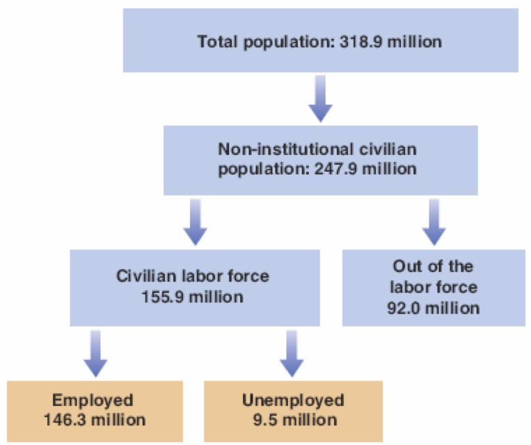
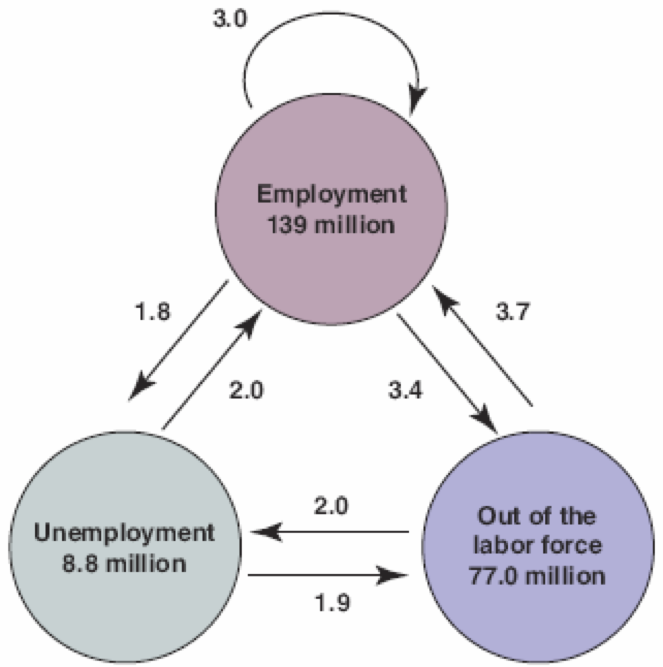
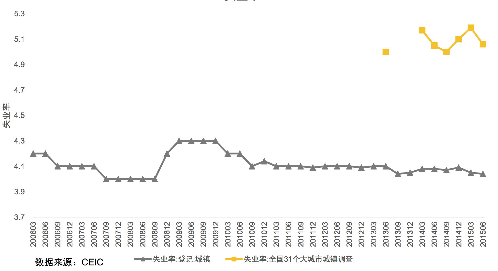

第七章 劳动力市场¶
We have focused on the short run by assuming a constant price level in the IS-LM model.
We now turn to the medium run and explore how prices and wages adjust over time, and how this in turn affects output.
- The labor market is the center of that sequence of events.
解决全社会范围的大规模失业是宏观经济学的目标之一。就业是任何一个负责任的政府最关注的统计指标之一。
劳动力市场统计¶
- Out of the total population, we can define non-institutional civilian population as those who are 16 or above (not inmates of institutions and not in the Armed Forces), and are either employed or unemployed
- 16周岁以上成年人口(不含囚犯、军人): 就业、失业、非劳动力人口
- Part of the non-institutional population that is either working or looking forwork is the labor force 劳动力
- 劳动力参与率 labor force participation rate：成年人口中劳动力的百分比
- Labor~force~participation~rate=\frac{labor force}{non-institutional~population}
- 失业率unemployment rate：劳动力中没有被雇佣的比率
- Unemployment~ rate =\frac{ unemployed}{labor~force}
美国的劳动市场统计the Labor Market in the United States¶

- Population, Labor Force, Employment, and Unemployment in the United States (in millions), 2014}
- The unemployment rate is the ratio of the unemployed to the labor force, was 9.5/155.9 = 6.1\%.
我国的劳动力市场统计¶
- 中国的人口和劳动力, 2015年数据
- 人口 13.7462 亿
- 经济活动人口(劳动力) 8.0091 亿
- (16周岁及以上，有劳动能力，参加或要求参加社会经济活动的人口。包括就业人员和失业人员。)
- 就业人员 7.7451 亿
- 城镇人口 7.7116 亿
- 城镇就业人员 4.0410 亿
- 城镇登记失业人员 966 万
- 城镇登记失业率 4.1\%
- 登记失业率：需要去当地社保局登记。
- 调查失业率：以居民调查为主，从2014年开始公布
Unemployment rate¶
- A given unemployment rate may reflect either:
- An active labor market: Many \textbf{separations} and hires, i.e, many workers entering and exiting unemployment
- A sclerotic labor market: Few separations and hires, and a stagnant unemployment pool
- The Current Population Survey (CPS) shows the average monthly flows.
- Separations include quits and layoffs.
- The average duration of unemployment—the length of time people spend unemployed—is 2 to 3 months.

\caption{7-2 Average Monthly Flows between Employment, Unemployment, and Nonparticipation in the United States, 1996 to 2014 (millions)}
- The flows of workers in and out of employment are large.
- The flows in and out of unemployment are large relative to the
number of unemployed.
- There are also large flows in and out of the labor force, much
of it directly to and from employment.
Out of the labor force¶
- Many who are classified as “out of the labor force” are in fact discouraged workers—not actively looking for a job but will take it if they find one.
- So, rather than the unemployment rate, economists sometimes focus on
the employment rate—the ratio of employment to the population.
Movements in Unemployment}¶
中国的失业率变化¶

- When unemployment is high, workers are worse off in two ways:
- Employed workers face a higher probability of losing their job.
- Unemployed workers face a lower probability of finding a job; or they can expect to remain unemployed for a longer time.
- Two things are missing in our model so far
- We have not dealt with the labor market at all: we do not know if there are people unemployed at the equilibrium income level
- Also, the price level is “fixed” in our model
- We have not explained how it is determined
- Hence the Blanchard calls the IS-LM model a short-run model
- We now move toward the medium run, at which price level and employment are determined
You consider the medium run when it is no longer appropriate to assume a
constant price